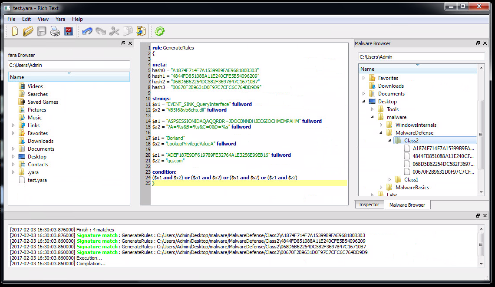
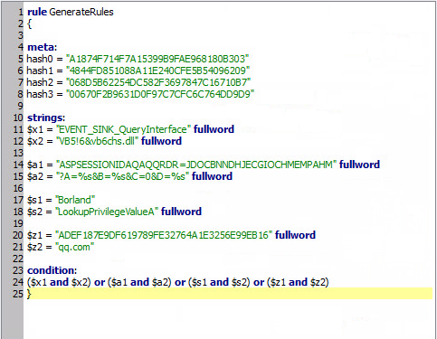
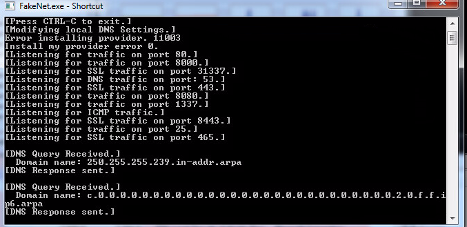
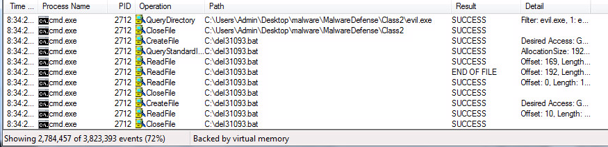
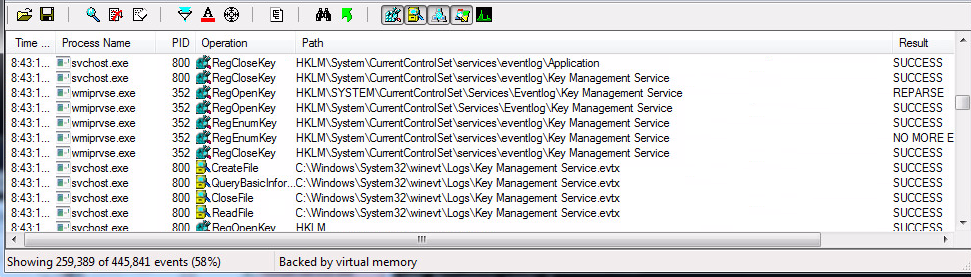
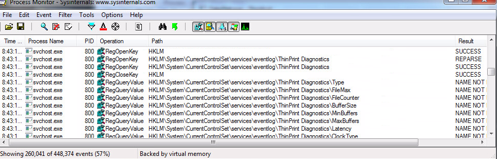
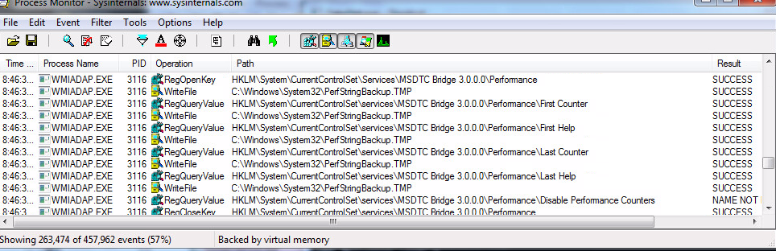
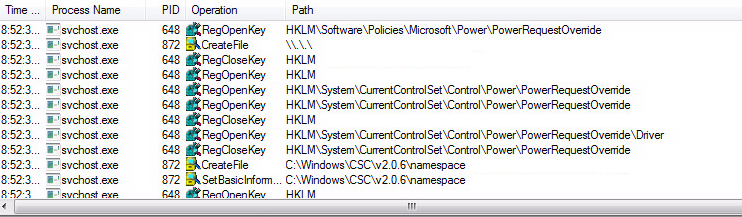

Week 3: Malware Defenses
Name: Kevin Guan
For week 4, the lectures and labs investigated numerous methods that people utilize to counter numerous forms of malware. When investigating the four mystery files inside Desktop\malware\MalwareDefense\Class2, three of the four files were found as malicious. The process involved renaming the suspected files as evil.exe and executing it with the usage of Process Monitor and Antispy to track if there are any significant difference of activities in the background. The executable is assumed malicious if there is a sudden rush of activities or the activities involved registry changes like RegCreateKey or RegSetValue. Additionally, the malicious files often cause the virtual machine stability issues and crash Windows Explorer. The malignant files have the hash 068d5b62254dc582f3697847c16710b7, 00670F2B9631D0F97C7CFC6C764DD9D9, and A1874f714f7a15399b9fae968180b303. The file with the hash, 4844fd851088a11e240cfe5b54096209, started a program called LADS when executed. Upon further investigation, the program is a tool that lists data streams of certain directories and is not considered malicious.
Selected Malware Hash: 068d5b62254dc582f3697847c16710b7
Data & Time: Started at 1-31-2016/8:34PM, Ended at 1-31-2016/8:55PM
Yara Rules for this Sample:


The investigation began with renaming the malware file as evil.exe and executing it under the monitoring of Flypaper, Fakenet, Process Monitor, Process Explorer, and AntiSpy. Upon initiation, Fakenet reported DNS queries from the domains 250.255.255.239.in-addr.arpa and c.0.0.0.0.0.0.0.0.0.0.0.0.0.0.0.0.0.0.0.0.0.0.0.0.0.0.0.2.0.f.f.ip6.arpa. When looking up these domains on Google, the results were varied and contained little definitive statements. The notable assumption is that the domain is under the guise of a proxy and hiding the domain's real identity.

Afterwards, Process Monitor was inspected to check for any notable activities. Upon near the beginning, the main activity revolved around the CreateFile operation in the path C:\del31093.bat. When the same directory was later inspected with AntiSpy, the batch file was no longer present. The assumption is that the purpose of the .bat file is to setup the environment for the malware to function and persist in the event of any system changes.

Eventually, the malware progressed in querying registry values that relate to Key Management Service and initiated a CreateFile operation in C:\Windows\System32\winevt\Logs\Key Management Service.evtx. After research, it appears that Key Management Service's main function is the management of the system's Windows Key and Activation.


Soon, the malware began writing numerous files in the directory C:\Windows\System32\PerfStringBackup.TMP. When investigating PerfStringBackup, it appears that the file is malicious and known for slowing down the computer's system and creating malicious pop-ups.

After waiting for several more minutes, the operations began writing files inside the directory C:\Windows\CSC\v2.0.6\namespace. When researching this file path, it appears that many malicious malware use this created space to store temporary files that contain security information like usernames or passwords.

When looking at all of the gathered information, it is safe to assume that this malware is a Trojan that revolves the stealing of information. The type of information that the malware was targeting is not entirely clear. When looking at the monitoring programs, the malware was querying many registries that involved CurrentControlSet and Key Management Service. The hypothesis is either that the Trojan is a keylogger based on the amount of monitoring that the malware undergoes or a malware that aims at taking the Windows Key from the system for the malware owner's personal gain due to the many activities that involved Key Management Service.
Overall, the entirety of the lab exhibits some of the practices that experts use to defend against malware on a regular basis. The process has brought more attention to the effectiveness of using good generic rules in Yara and its usage to detect certain strings and conditions in many forms of malware; however, there is the issue where if the rules become too generic, they may interfere with system files that the computer needs to operate properly. Accordingly, the most effective Yara rules need to sustain a proper balance between breadth and depth.
Another interesting subject that was discussed this week is the exploration of the today's popular technologies in malware defense. It is common knowledge that network firewalls, network intrusion preventions, and the other similar technologies have blocking dangerous threats as their main priorities; however, these prevention technologies are only effective as far as the administrator's abilities and knowledge. The technologies are very capable of preventing the threats, but if the administrator is clueless, then the defenses of the technology will be limited and place their systems at risk. In today's time, it is commonplace for many new malwares and threats to be released on an everyday basis. The issue has grown to the point where many new products may already fall behind the latest threats within the day of their releases. It is important for administrators to stay educated and aware of the constant changes of the potential threats that may take place in their surroundings, so they can keep their systems updated and secured.